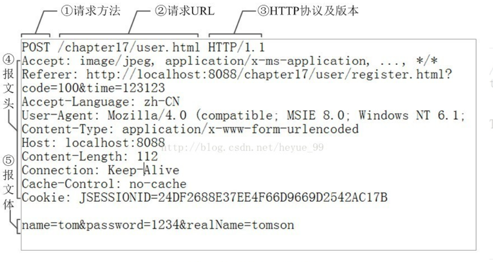
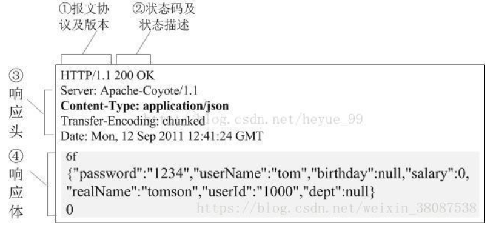
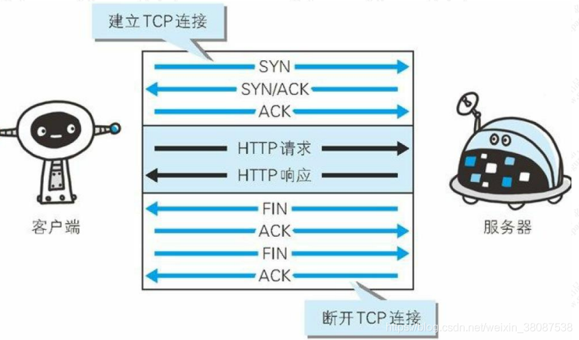
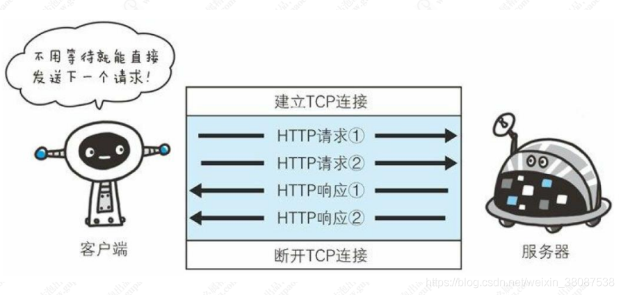
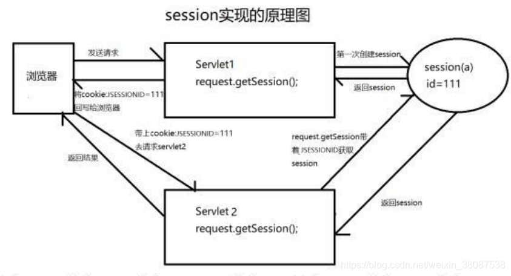

引入
超文本传输协议（HTTP，HyperText Transfer Protocol）是互联网上应用最为广泛的一种网络协议。所有的WWW文件都必须遵守这个标准。设计HTTP最初的目的是为了提供一种发布和接收HTML页面的方法。1960年美国人Ted Nelson构思了一种通过计算机处理文本信息的方法，并称之为超文本（hypertext）,这成为了HTTP超文本传输协议标准架构的发展根基。Ted Nelson组织协调万维网协会（World Wide Web Consortium）和互联网工程工作小组（Internet Engineering Task Force ）共同合作研究，最终发布了一系列的RFC，其中著名的RFC 2616定义了HTTP 1.1。
HTTP协议的作用及特点
HTTP是一个客户端和服务器端请求和应答的标准（TCP）。客户端是终端用户，服务器端是网站。
通过使用Web浏览器、网络爬虫或者其它的工具，客户端发起一个到服务器上指定端口（默认端口为80）的HTTP请求。（我们称这个客户端）叫用户代理（user agent）。应答的服务器上存储着（一些）资源，比如HTML文件和图像。（我们称）这个应答服务器为源服务器（origin server）。在用户代理和源服务器中间可能存在多个中间层，比如代理，网关，或者隧道（tunnels）。尽管TCP/IP协议是互联网上最流行的应用，HTTP协议并没有规定必须使用它和（基于）它支持的层。 事实上，HTTP可以在任何其他互联网协议上，或者在其他网络上实现。HTTP只假定（其下层协议提供）可靠的传输，任何能够提供这种保证的协议都可以被其使用。
通常，由HTTP客户端发起一个请求，建立一个到服务器指定端口（默认是80端口）的TCP连接。HTTP服务器则在那个端口监听客户端发送过来的请求。一旦收到请求，服务器（向客户端）发回一个状态行，比如”HTTP/1.1 200 OK”，和（响应的）消息，消息的消息体可能是请求的文件、错误消息、或者其它一些信息。HTTP使用TCP而不是UDP的原因在于（打开）一个网页必须传送很多数据，而TCP协议提供传输控制，按顺序组织数据，和错误纠正。
通过HTTP或者HTTPS协议请求的资源由统一资源标示符（Uniform Resource Identifiers）（或者，更准确一些，URLs）来标识。
- 基于请求/响应模型的协议。请求和响应必须成对，先有请求后有响应
- HTTP协议默认端口:80
- 简单快速：客户向服务器请求服务时，只需传送请求方法和路径。请求方法常用的有GET、HEAD、POST等。每种方法规定了客户与服务器联系的类型不同。由于HTTP协议简单，使得HTTP服务器的程序规模小，因而通信速度很快。
- 灵活：HTTP允许传输任意类型的数据对象。正在传输的类型由Content-Type加以标记。
- 无连接：无连接的含义是限制每次连接只处理一个请求。服务器处理完客户的请求，并收到客户的应答后，即断开连接。采用这种方式可以节省传输时间。
- 无状态：HTTP协议是无状态协议。无状态是指协议对于事务处理没有记忆能力。缺少状态意味着如果后续处理需要前面的信息，则它必须重传，这样可能导致每次连接传送的数据量增大。另一方面，在服务器不需要先前信息时它的应答就较快。
协议功能
HTTP协议是用于从WWW服务器传输超文本到本地浏览器的传输协议。它可以使浏览器更加高效，使网络传输减少。它不仅保证计算机正确快速地传输超文本文档，还确定传输文档中的哪一部分，以及哪部分内容首先显示(如文本先于图形)等。
HTTP是客户端浏览器或其他程序与Web服务器之间的应用层通信协议。在Internet上的Web服务器上存放的都是超文本信息，客户机需要通过HTTP协议传输所要访问的超文本信息。HTTP包含命令和传输信息，不仅可用于Web访问，也可以用于其他因特网/内联网应用系统之间的通信，从而实现各类应用资源超媒体访问的集成。
我们在浏览器的地址栏里输入的网站地址叫做URL (Uniform Resource Locator，统一资源定位符)。就像每家每户都有一个门牌地址一样，每个网页也都有一个Internet地址。当你在浏览器的地址框中输入一个URL或是单击一个超级链接时，URL就确定了要浏览的地址。浏览器通过超文本传输协议(HTTP)，将Web服务器上站点的网页代码提取出来，并翻译成漂亮的网页。
HTTP协议的版本
HTTP/1.0，发送请求，创建一次连接，获得一个web资源，连接断开
HTTP/1.1，发送请求，创建一次连接，获得多个web资源，连接断开
HTTP/2.0
HTTP协议的组成
HTTP协议由HTTP请求和HTTP响应组成，当在浏览器中输入网址访问某个网站时， 你的浏览器会将你的请求封装成一个HTTP请求发送给服务器站点，服务器接收到请 求后会组织响应数据封装成一个HTTP响应返回给浏览器。即没有请求就没有响应。
HTTP请求包括：请求行、请求头、请求体
HTTP响应包括：响应行、响应头、响应体
HTTP请求报文
HTTP请求报文由3部分组成（请求行+请求头+请求体）：

请求行
例如：POST /chapter17/user.html HTTP/1.1
格式：请求方式 资源路径 协议/版本
请求行必须在HTTP请求格式的第一行。
GET请求
- 将请求参数追加在URL后面，不安全
- URL长度限制GET请求方式数据的大小
- 没有请求体
- 一般的HTTP请求大多都是GET。
- 常见GET请求：地址栏直接访问、\、\
等
POST请求
请求参数在请求体处，较安全。
请求数据大小没有限制
只有表单设置为method=“post”才是POST请求，其他都是GET请求
HEAD请求
HEAD跟GET相似，不过服务端接收到HEAD请求时只返回响应头，不发送响应内容。所以，如果只需要查看某个页面的状态时，用HEAD更高效，因为省去了传输页面内容的时间。
DELETE请求
删除某一个资源。
OPTIONS请求
用于获取当前URL所支持的方法。若请求成功，会在HTTP头中包含一个名为“Allow”的头，值是所支持的方法，如”GET, POST”。
PUT请求
把一个资源存放在指定的位置上。
本质上来讲， PUT和POST极为相似，都是向服务器发送数据，但它们之间有一个重要区别，PUT通常指定了资源的存放位置，而POST则没有，POST的数据存放位置由服务器自己决定。
TRACE请求
回显服务器收到的请求，主要用于测试或诊断。
CONNECT请求
CONNECT方法是HTTP/1.1协议预留的，能够将连接改为管道方式的代理服务器。通常用于SSL加密服务器的链接与非加密的HTTP代理服务器的通信。
在 REST 架构风格中，有严格规定对于不同的请求类型要设置合适的请求方法。
也是避免出现因为乱用导致混乱的问题。这里提到了REST架构，现在很多同学都在写REST，有没有人能够明白为什么要定义REST这个架构风格？（使用REST）
- 随着服务化架构的普及，HTTP协议的使用频率越来越高
- 很多人在错误的使用HTTP协议定义接口，比如各种各样的命名，什么 getUserInfoById， deleteById 之类的、有状态和无状态请求混用。
- 对于 http 协议本身提供的规则并没有很好的利用
所以，为了更好的解决这些问题，干脆就定义一套规则，这套规则并没有引入新的东西，无非就是对 http 协议本身的使用做了一些约束，比如说
- REST是面向资源，每一个 URI 代表一个资源
- 强调无状态化，服务器端不能存储来自某个客户的某个请求中的信息，并在该客户的其他 请求中使用
- 强调 URL 暴露资源时，不要在 URI 中出现动词
- 合理的利用 http 状态码、请求方法。
因此大家在参照这种标准去使用 REST 风格时，要明白你遵循的是什么以及要解决什么问题。
请求头
例如：Host: 39.108.107.149:8080
请求头从第二行开始，到第一个空格结束。请求头和请求体之间存在一个空格(如下)
例如：Host: 39.108.107.149:8080
请求头从第二行开始，到第一个空格结束。请求头和请求体之间存在一个空格(如下)
POST http://39.108.107.149:8080/vk/app/rest/ddp/iModelServiceImpl/findModelByType HTTP/1.1 |
请求头通常以键值对{key:value}方式传递数据。
key为规范的固定值
value为key对应的取值，通常是一个值，可能是一组。
常见的请求头属性
Referer: 表示这个请求是从哪个url跳过来的，通过百度来搜索淘宝网,那么在进入淘宝网的请求报文中，Referer的值就是:www.baidu.com。 如果是直接访问就不会有这个头。
常用于：防盗链。
Referer: no-referrer-when-downgrade |
Accept: 告诉服务端，该请求所能支持的响应数据类型，专业术语称为MIME 类型(文件类型的一种描述方式)
Accept: text/html,application/xhtml+xml,application/xml;q=0.9,image/webp,image/apng,*/*;q=0.8 |
MIME格式：大类型/小类型[;参数]
Accept: text/html,application/xhtml+xml,application/xml;q=0.9,image/webp,image/apng,/;q=0.8
例如:
text/html,html文件
text/css,css文件
text/javascript,js文件
image/*，所有图片文件
Cookie: 客户端的Cookie就是通过这个报文头属性传给服务端的哦！
Cookie: JSESSIONID=15982C27F7507C7FDAF0F97161F634B5 |
这里就出了一个问题,网站A怎么保证自己请求体中保存的cookie就是网站A的cookie而不是网站B的cookie呢,这就和cookie里面的jsessionid有关系了，关于cookie,session,sessionid,jsessionid的区别联系，可以参考这个博文:
http://www.cnblogs.com/fnng/archive/2012/08/14/2637279.html
User-Agent: 浏览器通知服务器，客户端浏览器与操作系统相关信息
User-Agent: Mozilla/5.0 (Windows NT 10.0; Win64; x64) AppleWebKit/537.36 (KHTML, like Gecko) Chrome/69.0.3497.100 Safari/537.36 |
Connection: 表示客户端与服务连接类型；Keep-Alive表示持久连接，close已关闭
Connection: keep-alive |
Host: 请求的服务器主机名
Host: sczpkj.f3322.net:3000 |
Content-Length: 请求体的长度
POST http://39.108.107.149:8080/vk/app/rest/ddp/iModelServiceImpl/findModelByType HTTP/1.1 |
Content-Type: 请求的与实体对应的MIME信息。如果是POST请求,会有这个头,默认值为application/x-www-form-urlencoded，表示请求体内容使用url编码
Content-Type: application/x-www-form-urlencoded |
Content-Type详解
常见的Content-Type：
Content-Type 解释 text/html html格式 text/plain 纯文本格式 text/css CSS格式 text/javascript js格式 image/gif gif图片格式 image/jpeg jpg图片格式 image/png png图片格式 application/x-www-form-urlencoded POST专用：普通的表单提交默认是通过这种方式。form表单数据被编码为key/value格式发送到服务器。 application/json POST专用：用来告诉服务端消息主体是序列化后的 JSON 字符串 text/xml POST专用：发送xml数据 multipart/form-data POST专用：下面讲解 application/x-www-form-urlencoded
最常见的post提交数据的方式。浏览器原生的form表单，如果不设置enctype属性，那么最终就会以application/x-www-form-urlencoded 方式提交数据
示例：
Content-Type: application/x-www-form-urlencoded
cache-control: no-cache
Postman-Token: 8e602802-b4f5-4d05-96d7-e1c7a1951719
User-Agent: PostmanRuntime/7.1.1
Accept: */*
Host: 39.108.107.149:8080
cookie: JSESSIONID=6CD80B7028062D9190717CEE001C3194
accept-encoding: gzip, deflate
content-length: 32
Connection: keep-alive
name=%E5%9F%8E%E5%B8%82&status=1首先，Content-Type 被指定为 application/x-www-form-urlencoded；其次，提交的数据按照 key1=val1&key2=val2 的方式进行编码，key 和 val 都进行了 URL 转码。大部分服务端语言都对这种方式有很好的支持。
很多时候，我们用 Ajax 提交数据时，也是使用这种方式。例如 JQuery 和 QWrap 的 Ajax，Content-Type 默认「application/x-www-form-urlencoded;charset=utf-8」。
multipart/form-data
这又是一个常见的 POST 数据提交的方式。我们使用表单上传文件时，必须让 form 的 enctyped 等于这个值。
此时（当使用表单上传文件时），HTTP请求报文格式如下：
Content-Type: multipart/form-data; boundary=--------------------------629236571647111133881449
cache-control: no-cache
Postman-Token: 2146b4b3-2d30-469c-bbcd-fbc4693934d9
User-Agent: PostmanRuntime/7.1.1
Accept: */*
Host: 39.108.107.149:8080
cookie: JSESSIONID=6CD80B7028062D9190717CEE001C3194
accept-encoding: gzip, deflate
content-length: 435
Connection: keep-alive
----------------------------629236571647111133881449
Content-Disposition: form-data; name="file"; filename="test.txt"
Content-Type: text/plain
test upload
----------------------------629236571647111133881449
Content-Disposition: form-data; name="extCode"
test
----------------------------629236571647111133881449
Content-Disposition: form-data; name="extId"
3306
----------------------------629236571647111133881449-- //结束标识首先生成了一个 boundary 用于分割不同的字段，为了避免与正文内容重复，boundary 很长很复杂。然后 Content-Type 里指明了数据是以 mutipart/form-data 来编码，本次请求的 boundary 是什么内容。
消息主体里按照字段个数又分为多个结构类似的部分，每部分都是以—boundary开始，紧接着内容描述信息，然后是回车，最后是最后是字段具体内容（文本或二进制），如果传输的是文件，还要包含文件名和文件类型信息。消息主体最后以—boundary—标示结束。
上面提到的这两种 POST 数据的方式，都是浏览器原生支持的，而且现阶段原生 form 表单也只支持这两种方式。但是随着越来越多的 Web 站点，尤其是 WebApp，全部使用 Ajax 进行数据交互之后，我们完全可以定义新的数据提交方式，给开发带来更多便利。
application/json
application/json 这个 Content-Type 作为响应头大家肯定不陌生。实际上，现在越来越多的人把它作为请求头，用来告诉服务端消息主体是序列化后的 JSON 字符串。由于 JSON 规范的流行，除了低版本 IE 之外的各大浏览器都原生支持 JSON.stringify，服务端语言也都有处理 JSON 的函数，使用 JSON 不会遇上什么麻烦。 JSON 格式支持比键值对复杂得多的结构化数据，这一点也很有用。
当
Content-Type: application/json时请求报文如下：
Content-Type: application/json
cache-control: no-cache
Postman-Token: 5014bc39-0777-49d5-bb8a-73db9a981e49
User-Agent: PostmanRuntime/7.1.1
Accept: */*
Host: 39.108.107.149:8080
cookie: JSESSIONID=6CD80B7028062D9190717CEE001C3194
accept-encoding: gzip, deflate
content-length: 132
Connection: keep-alive
{
"name":"828验证继承",
"getresultType":"2",
"createTime":"Tue Sep 11 2018 00:00:00 GMT+0800 (中国标准时间)"
}这种方案，可以方便的提交复杂的结构化数据，特别适合 RESTful 的接口。各大抓包工具如 Chrome 自带的开发者工具、Firebug、Fiddler，都会以树形结构展示 JSON 数据，非常友好。
Accept-Encoding: 浏览器通知服务器，浏览器支持的数据压缩格式。如GZIP压缩
Accept-Encoding: gzip, deflate |
Accept-Language: 浏览器通知服务器，浏览器支持的语言。各国语言(国际化i18n)
Accept-Language: zh-CN,zh;q=0.9 |
Cache-Control: 指定请求和响应遵循的缓存机制
对缓存进行控制，如一个请求希望响应返回的内容在客户端要被缓存一年，或不希望被缓存就可以通过这个报文头达到目的。
Cache-Control: no-cache |
更多请求头属性可以参考这篇文章:HTTP响应头和请求头信息对照表
请求体
当请求方式是post的时，请求体会有请求的参数，格式如下：
username=zhangsan&password=123
POST http://39.108.107.149:8080/vk/app/rest/ddp/iModelServiceImpl/findModelByType HTTP/1.1 |
HTTP响应报文
HTTP的响应报文也由三部分组成（响应行+响应头+响应体）

响应行
例如：HTTP/1.1 200 OK
格式：报文协议及版本 状态码及状态描述
常见的状态码
状态码：由3位数字组成，第一个数字定义了响应的类别
1xx：指示信息，表示请求已接收，继续处理
2xx：成功，表示请求已被成功接受，处理。
- 200 OK：客户端请求成功
- 204 No Content：无内容。服务器成功处理，但未返回内容。一般用在只是客户端向服务器发送信息，而服务器不用向客户端返回什么信息的情况。不会刷新页面。
- 206 Partial Content：服务器已经完成了部分GET请求（客户端进行了范围请求）。响应报文中包含Content-Range指定范围的实体内容
3xx：重定向
- 301 Moved Permanently：永久重定向，表示请求的资源已经永久的搬到了其他位置。
- 302 Found：临时重定向，表示请求的资源临时搬到了其他位置
- 303 See Other：临时重定向，应使用GET定向获取请求资源。303功能与302一样，区别只是303明确客户端应该使用GET访问
- 307 Temporary Redirect：临时重定向，和302有着相同含义。POST不会变成GET
- 304 Not Modified：表示客户端发送附带条件的请求（GET方法请求报文中的IF…）时，条件不满足。返回304时，不包含任何响应主体。虽然304被划分在3XX，但和重定向一毛钱关系都没有
4xx：客户端错误
- 400 Bad Request：客户端请求有语法错误，服务器无法理解。
- 401 Unauthorized：请求未经授权，这个状态代码必须和WWW-Authenticate报头域一起使用。
- 403 Forbidden：服务器收到请求，但是拒绝提供服务
- 404 Not Found：请求资源不存在。比如，输入了错误的url
- 415 Unsupported media type：不支持的媒体类型
5xx：服务器端错误，服务器未能实现合法的请求。
- 500 Internal Server Error：服务器发生不可预期的错误。
- 503 Server Unavailable：服务器当前不能处理客户端的请求，一段时间后可能恢复正常，
响应头
响应报文头，也是由多个属性组成；
响应头也是用键值对；
服务器通过响应头来控制浏览器的行为，不同的头浏览器操作不同
| 常见请求头 | 描述 |
|---|---|
| Location | 指定响应的路径，需要与状态码302配合使用，完成跳转。 |
| Content-Type | 响应正文的类型（MIME类型）；取值：text/html;charset=UTF-8 |
| Content-Disposition | 通过浏览器以下载方式解析正文； 取值：attachment;filename=xx.zip |
| Set-Cookie | 与会话相关技术。服务器向浏览器写入Cookie |
| Content-Encoding | 服务器使用的压缩格式；取值：gzip |
| Content-length | 响应正文的长度 |
| Refresh | 定时刷新，格式：秒数;url=路径。url可省略，默认值为当前页。取值：3;url=www.itcast.cn //三秒刷新页面到www.itcast.cn |
| Server | 指的是服务器名称，默认值：Apache-Coyote/1.1。可以通过conf/server.xml配置进行修改。 |
| Last-Modified | 服务器通知浏览器，文件的最后修改时间。与If-Modified-Since一起使用。 |
| Cache-Control | 响应输出到客户端后，服务端通过该报文头属告诉客户端如何控制响应内容的缓存。常见的取值有常见的取值有private、public、no-cache、max-age，no-store，默认为private。缓存时间为31536000秒（365天） |
更多请求头属性可以参考这篇文章：HTTP响应头和请求头信息对照表
响应体
响应报文体，服务器发送给浏览器的正文，即我们真正要的“干货” ；
响应体，响应体是服务器回写给客户端的页面正文，浏览器将正文加载到内存，然后解析渲染，显示页面内容。
HTTP协议扩展
如果传输的文件过大怎么办
服务器上返回的资源文件比较大，比如有些 js 文件大小可能就有几兆。文件过大就会影响传 输的效率，同时也会带来带宽的消耗。怎么办呢？
- 常见的手段是，对文件进行压缩，减少文件大小。那压缩和解压缩的流程怎么实现呢？ 首先服务端需要能支持文件的压缩功能，其次浏览器能够针对被压缩的文件进行解压缩。浏览器可以指定 Accept-Encoding 来高速服务器我当前支持的编码类型 Accept-Encoding:gzip,deflate 那服务端会根据支持的编码类型，选择合适的类型进行压缩。常见的编码方式有：gzip/deflate
- 分割传输 在传输大容量数据时，通过把数据分割成多块，能够让浏览器逐步显示页面。这种把实体主体分块的功能称为分块传输编码（Chunked Transfer Coding）。
每次请求都要建立连接吗？
在最早的 HTTP 协议中，每进行一次 HTTP 通信，就需要做一次 TCP 的连接。而一次连接需要进行 3 次握手，这种通信方式会增加通信量的开销。

所以在 HTTP/1.1 中改用了持久连接，就是在一次连接建立之后，只要客户端或者服务端没有 明确提出断开连接，那么这个 tcp 连接会一直保持连接状态 持久连接的一个最大的好处是：大大减少了连接的建立以及关闭时延。 HTTP1.1 中有一个 Transport 段。会携带一个 Connection:Keep-Alive，表示希望将此条连接 作为持久连接。
HTTP/1.1 持久连接在默认情况下是激活的，除非特别指明，否则 HTTP/1.1 假定所有的连接都 是持久的，要在事务处理结束之后将连接关闭，HTTP/1.1 应用程序必须向报文中显示地添加 一个 Connection：close 首部。
HTTP1.1 客户端加载在收到响应后，除非响应中包含了 Connection：close 首部，不然 HTTP/1.1 连接就仍然维持在打开状态。但是，客户端和服务器仍然可以随时关闭空闲的连接。不发送 Connection：close 并不意味这服务器承诺永远将连接保持在打开状态。
管道化连接：http/1.1 允许在持久连接上使用请求管道。以前发送请求后需等待并收到响应， 才能发送下一个请求。管线化技术出现后，不用等待响应亦可直接发送下一个请求。这样就 能够做到同时并行发送多个请求，而不需要一个接一个地等待响应了。

HTTP协议如何解决无状态问题
HTTP 协议是无状态的，什么是无状态呢？就是说 HTTP 协议本身不会对请求和响应之间的 通信状态做保存。 但是现在的应用都是有状态的，如果是无状态，那这些应用基本没人用，你想想，访问一个电商网站，先登录，然后去选购商品，当点击一个商品加入购物车以后又提示你登录。这种用户体验根本不会有人去使用。那我们是如何实现带状态的协议呢？
- 客户端支持的 cookie
HTTP 协议中引入了 Cookie 技术，用来解决HTTP协议无状态的问题。通过在请求和响应报文中写入 Cookie 信息来控制客户端的状态；Cookie 会根据从服务器端发送的响应报文内的一个叫做 Set-Cookie 的首部字段信息，通知客户端保存 Cookie。当下次客户端再往该服务器发送请求时，客户端会自动在请求报文中加入 Cookie 值后发送出去。
- 服务端支持的 session
服务端是通过什么方式来保存状态的呢？ 在基于 tomcat 这类的 jsp/servlet 容器中，会提供 session 这样的机制来保存服务端的对象状态，服务器使用一种类似于散列表的结构来保存信息，当程序需要为某个客户端的请求创建一个 session 的时候，服务器首先检查这个客户端 的请求是否包含了一个 session 标识- session id； 如果已包含一个 session id 则说明以前已经为客户端创建过 session，服务器就按照 session id 把这个 session 检索出来使用（如果检索不到，会新建一个）； 如果客户端请求不包含 sessionid，则为此客户端创建一个 session 并且生成一个与此 session 相关联的 session id， session id 的值是一个既不会重复，又不容易被找到规律的仿造字符 串，这个 session id 将会返回给客户端保存

更多…
- [ ] HTTP1.0/HTTP1.1/HTTP2.0的异同
- [ ] HTTP与HTTPS的不同；HTTPS的原理
- [ ] HTTP长连接与短连接
- [ ] GET/POST区别详解
- [ ] Cookie、Session详解